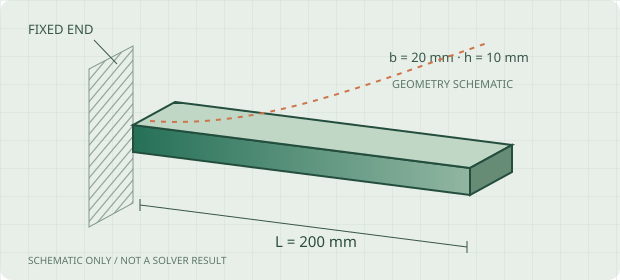

CASE 001 / CANTILEVERGEOMETRY STUDY

單一實體 → 固定端 → 前六階振型示意圖
01目前開放主題
04入門學習筆記
2024 R2教學基準版本
0 / 4本機已讀進度
YOUR LEARNING PATH
模態分析專區 ↗從這裡，開始第一個分析
KNOWLEDGE LIBRARY
每一篇，都讓下一步更清楚
共 4 篇筆記
觀念筆記01
先讀懂固有頻率，再看振型
分清楚結構喜歡怎麼振動，以及外力會讓它振多大，建立第一個模態分析前的基本觀念。
6 分鐘 · 入門開始閱讀 ↗
操作教學02
第一個案例：懸臂樑模態分析
從 Workbench 建立分析系統，以單一長方形實體練習材料、固定端、網格及前六階結果。
15 分鐘 · 入門開始閱讀 ↗
問題紀錄03
接近 0 Hz：先看振型，再改設定
從自由結構、拘束不足到未連接零件，依序找出近零頻率的物理意義。
7 分鐘 · 入門開始閱讀 ↗
觀念筆記04
網格變細之前，先決定要比較什麼
用相同振型的頻率變化檢查網格敏感度，避免只看元素數或階數就宣稱收斂。
6 分鐘 · 入門開始閱讀 ↗
找不到符合的筆記，試試其他關鍵詞或類型。
GROW WITH THE LAB